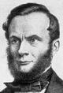
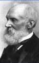

NO ME SALEN
(APUNTES TEÓRICOS Y EJERCICIOS DE BIOFÍSICA DEL CBC)
CALOR Y TERMODINÁMICA
|
|

|
| |
 |
EM - Problema 11 -
Indique cuál de las siguientes afirmaciones es la única verdadera:
a) La energía interna de cualquier sistema termodinámico es sólo función de la temperatura.
b) La energía interna de un gas ideal es sólo función de la temperatura. |
| |
c) En una evolución isotérmica el sistema no intercambia calor.
d) En un proceso adiabático el sistema no varía la temperatura.
e) Si un sistema no varía su volumen, entonces no realiza ni recibe trabajo.
f) Si un gas no varía su energía interna entonces no recibe calor. |
|
| |
En este ejercicio de preguntas y respuestas (a dos pesos los tres tiros, si embocás una podés volver a jugar) vamos a repasar el primer principio de la termodinámica:
Q = ΔU + L
En varias afirmaciones alcanza con mirar el principio para darse cuenta de que la afirmación es falsa. De todos modos, además de indicarlo algebraicamente, voy a tratar de darte al menos un ejemplo en el que puedas ver la realidad. |
|
|
a) La energía interna de cualquier sistema termodinámico es sólo función de la temperatura. FALSO... suponete que tenés dos bolsitas de polvo... de igual masa y a la misma temperatura. Una de ellas es de talco para las manos y la otra... pólvora. ¿Cómo podés pensar que tienen la misma energía interna...? Pensá lo que quieras, pero te recomiendo que la de pólvora la manejes con cuidado porque tiene adentro una cantidad de energía que si se libera puede que te haga aparecer en los diarios. Y si tuvieras otra bolsita... también de la misma masa que las anteriores... llena de azúcar... puede que te cueste un poco más encontrar el razonamiento para falsar esa proposición tan absurda... pero creo que que bien claro lo ridículo de la pretensión de evaluar la energía interna de un sistema sólo con la temperatura.
b) La energía interna de un gas ideal es sólo función de la temperatura. VERDADERA... y no hay contradicción con la respuesta anterior... pero justamente porque un gas ideal es un sistema tan, pero tan simple... que la única forma que tiene de acumular energía, pobrecito, es estando más o menos caliente... o sea, con su temperatura. Un gas ideal son (en sentido figurado) bolitas inertes tan pero tan chiquitas que ni siquiera son capaces de chocar entre ellas.
c) En una evolución isotérmica el sistema no intercambia calor. FALSO. En una evolucion isotérmica pueden ocurrir muchas cosas que impliquen intercambios de calor y aún de trabajo. Te doy algunos ejemplos. Cuando un material se derrite o se evapora, esos cambios de estado ocurren a temperatura constante, pero gracias a que reciben o pierden calor.
d) En un proceso adiabático el sistema no varía la temperatura. FALSO, basta con ver la fórmula, Q = ΔU + L, y te das cuenta que si el calor fuera nulo, entonces solamente ocurriría que la variación de energía interna se haría igual al contrario del trabajo: 0 = ΔU + L. Un proceso es adiabático si no intercambia calor con el medio... pero puede recibir o hacer trabajo a expensas de su energía interna. Te doy un ejemplo: ponete 5 pulóveres y una campera. Después empujá un auto hasta la esquina.
e) Si un sistema no varía su volumen, entonces no realiza ni recibe trabajo.
FALSO. El único caso en que podemos darle la venia a esta afirmación es cuando el sistema no es otra cosa que un gas ideal. De no tratarse de un gas ideal podríamos imaginar cientos de sistemas que realizan trabajos sin variar su volumen. Vos mismo, por ejemplo, podés realizar trabajos subiendo, bajando, moviendo cosas de un lugar para otro... y no esperarías por ello encontrar cambios en tu volumen.
f) Si un gas no varía su energía interna entonces no recibe calor. FALSO, basta con ver la fórmula, Q = ΔU + L, y te das cuenta que si la variación de energía interma fuera nula, entonces solamente ocurriría que el calor se haría igual al trabajo: Q = L. Es lo que ocurre habitualmente cuando un gas ideal se expande a temperatura constante. Durante esa expansión empuja algo, realizando un trabajo sobre ese algo.
|
|




|
Desafío:
Buscar un contraejemplo adicional para cada afirmación falsa. ¿Quiénes son esos cuatro ñatos de las fotos? |
|
 |
| |
|
Algunos derechos reservados.
Se permite su reproducción citando la fuente. Última actualización nov-08. Buenos Aires, Argentina. |
|
|
| | |
|
|